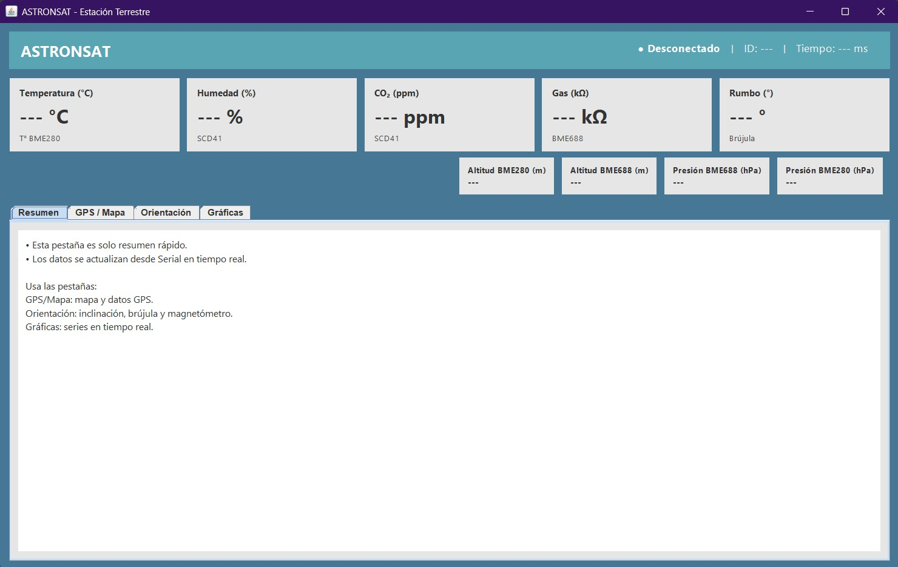

Proyecto CanSat para monitoreo ambiental
Esta página describe el proyecto Astronsat, un CanSat diseñado para monitorear variables ambientales en tiempo real utilizando avanzados sensores y tecnologías como LoRa y ESP32.
Ver detallesEl proyecto Astronsat tiene como objetivo el monitoreo ambiental en tiempo real mediante el uso de un CanSat. Este dispositivo recolecta datos como temperatura, humedad, presión atmosférica, calidad del aire, altitud, entre otros, y transmite esta información en tiempo real a través de LoRa. Se utiliza un diseño modular y robusto para facilitar su mantenimiento y mejora continua.
Se han realizado modificaciones importantes al prototipo, como la integración de nuevos sensores, la reorganización de la arquitectura a tres nodos, y mejoras en el código para optimizar la transmisión de datos. Estas modificaciones mejoran la precisión de las mediciones y la fiabilidad del sistema.
Los principales sensores utilizados en el Astronsat incluyen el BME680 para mediciones ambientales, el SCD41 para detectar CO2, el MPU6050 para medir aceleración y orientación, y el GPS BN-880 para la geolocalización. Estos sensores trabajan en conjunto para proporcionar datos precisos que son cruciales para el análisis ambiental.
La estación terrestre está compuesta por un ESP32 S3 Zero conectado a un módulo LoRa DX LR03. Este sistema recibe los datos en tiempo real desde el CanSat y los despliega en un monitor serial. Los datos incluyen variables como temperatura, humedad, presión, y ubicación GPS.
El impacto de Astronsat en la comunidad es significativo, especialmente en el monitoreo ambiental y la toma de decisiones en zonas vulnerables. La capacidad de medir variables como el CO2 y la calidad del aire, y la posibilidad de transmitir estos datos a una estación terrestre, hacen que el proyecto sea un valioso recurso para el análisis ambiental en tiempo real.
Integrantes:
Adrian Eduardo Lopez Guevara
Daniel Jimenez Verdin
Saúl Miguel González Ayala
Martha Vanesa Corona Bueno
Cecilia Reyes Garcia